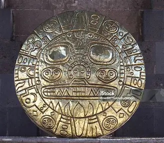

.webp)
Discoveries
A catalog of humanity's most profound historical treasures.
A catalog of humanity's most profound historical treasures.

A golden celestial calendar found in the highland temples.

Ceremonial vessel used in royal ascensions.

Flawlessly knapped blade from the volcanic ash sites.

Our bioarchaeology team has unearthed significant skeletal remains that shed light on ancient diets, diseases, and migrations. Notable findings include the 'Desert Nomads' burial site, which provided intact DNA samples from over 4,000 years ago.
Over 10,000 silver and bronze coins spanning 5 empires, detailing the economic shift of the Mediterranean.
Iron-tipped plows and sickle blades that sparked the second agricultural revolution.
Amulets, seals, and jewelry that offer a glimpse into the daily lives and spiritual beliefs of commoners.
Every artifact we uncover is a puzzle piece. Together, they rewrite history books, challenge our understanding of human progress, and remind us of the shared heritage that unites all cultures.
Join our community of explorers and be the first to know about new discoveries.